替代对象简介
| 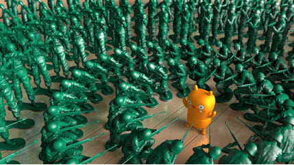 | 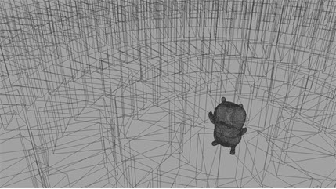 |
利用*替代对象*，您可以将几何体数据的加载延缓到渲染时进行，从而保持工作场景轻巧且适宜（交互）工作。您可以毫不费力地为场景增添层次极多的复杂性。在此简介教程中，我们将为您介绍使用替代对象设置复杂场景所需的简单步骤。
要下载对应的场景，请单击此处。
以下步骤介绍了几个有关使用替代对象的实用技巧（您可以使用自己合适的模型尝试这些技巧）。请注意，本教程只是对替代对象这个强大工具进行简单介绍。
- 使用 Arnold 的替代对象节点打开要复制的模型。确保在导出模型前已完成建模和着色处理，因为导出模型后，您将无法再对其进行修改。要导出模型，请选择模型并转到“Arnold > 替代对象 > 导出”(Arnold > StandIn > Export)菜单选项。或者，也可以通过“文件 > 导出全部”(File > Export All)选项将模型导出为替代对象。
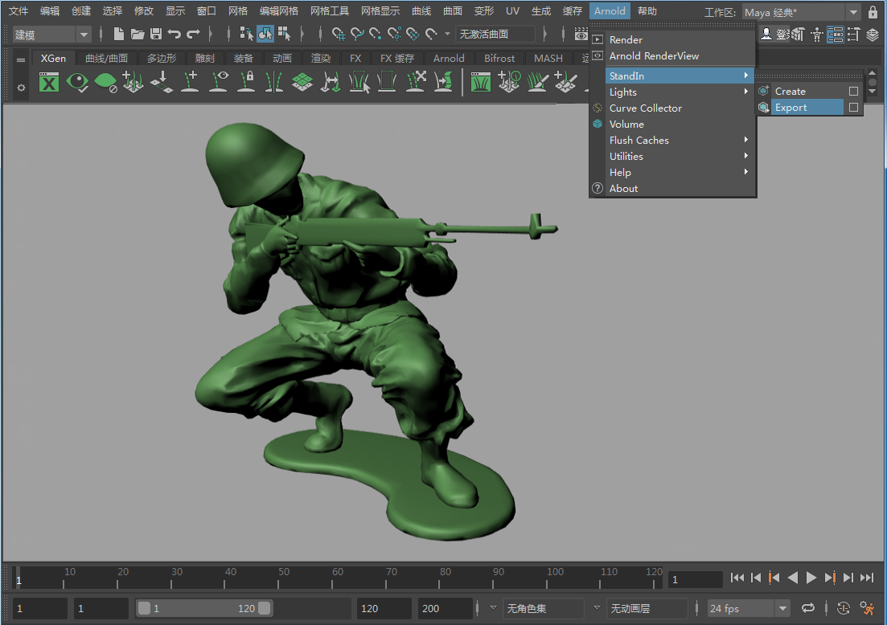
从 Arnold 菜单将模型导出为替代对象
导出替代对象
- 选择要用作替代对象的模型的导出位置，然后单击“确定”(OK)。Arnold 会将网格导出为 .ass 文件，其中包含渲染网格所需的一切。如果您的模型文件很大，可以选择对其进行压缩，方法是选择“压缩”(Compressed)。如果模型包含动画，则单击“序列”(Sequence)并选择要导出的帧范围（创建替代对象后，记得在其帧属性中写入
'=frame'）。
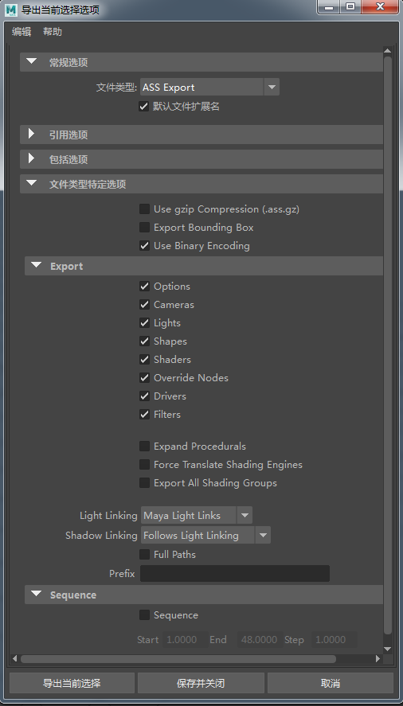
Ass 导出选项
创建替代对象
- 创建一个新场景。创建一个新的替代对象（转到“Arnold > 替代对象 > 创建”(Arnold > Stand-in > Create)）。您应该会看到替代对象表示为一个边界框。
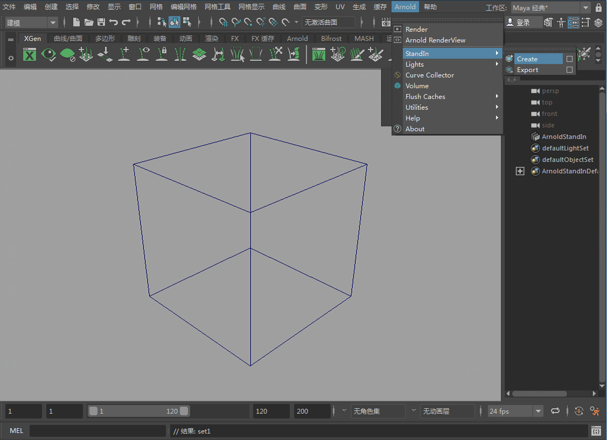
替代对象在 Maya 视口中显示为边界框
- 选择该替代对象并打开属性编辑器。在“路径”(Path)中，选择已导出为替代对象模型的 .ass 文件。
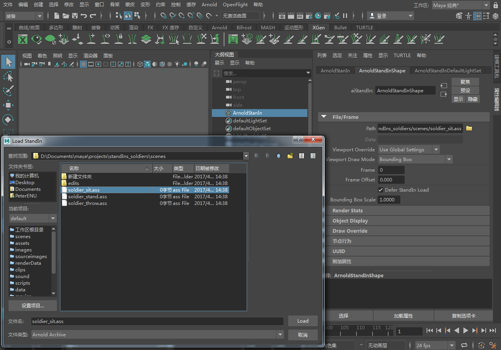
加载替代对象的 ass 文件
- 您应该会注意到替代对象边界框的形状变得与原始模型的形状一致。将它放置在栅格的中心。将枢轴放置在替代对象的底部。这将帮助我们确定实例化的替代对象模型的位置。
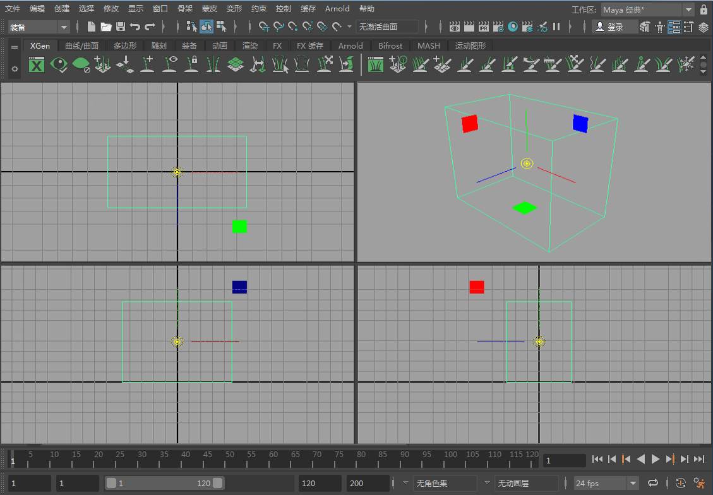
照明
- 创建平行光。将灯光指向替代对象并进行渲染。您应该会看到原始模型及其原始着色器的指定情况。如果您需要更改着色器，必须重新导出替代对象并重复上述步骤，或者为其指定一个新的着色器。
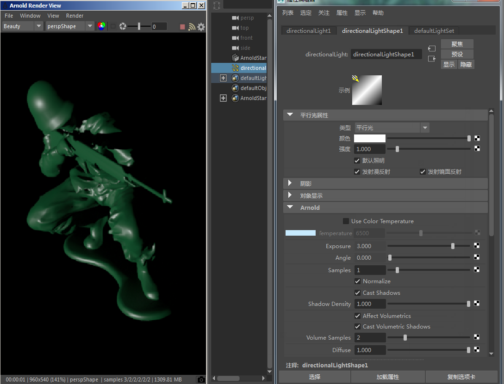
- 下面我们将平行光替换为 HDR 照明。打开 Hypershade 窗口，然后创建一个 Ai SkyDomeLight。为“颜色”(Color)指定一个文件纹理，然后选择一个合适的 HDR 贴图。
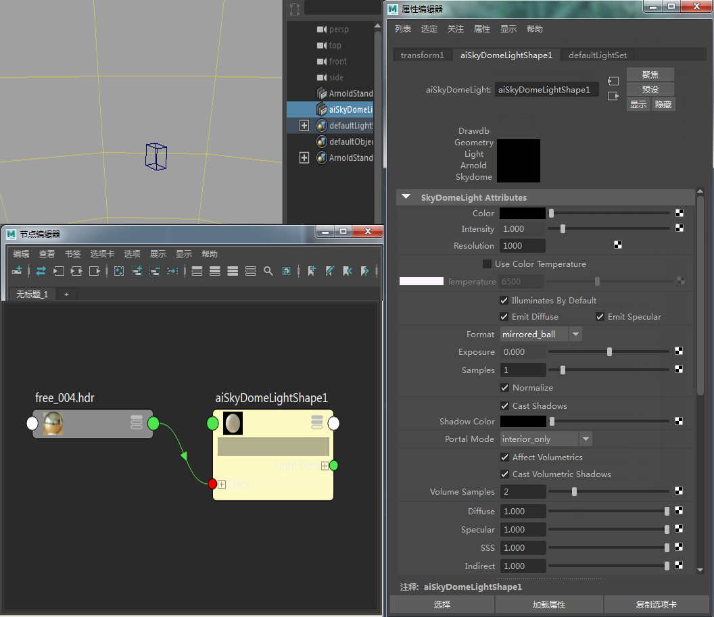
渲染结果应该类似下图。
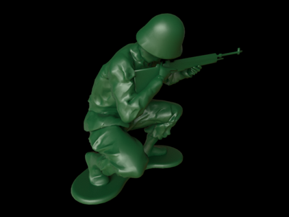
替代对象使用 Ai 天穹灯光进行照明
- 创建一个多边形平面，然后将其放大到足够大，以用作替代对象的地板平面。为其指定一个 standard_surface 着色器，并为 base_color、specular_color 和“凹凸贴图”(Bump map)*窗口指定一个木质地板纹理。将 *specular_weight 增加到 0.3 左右，并将 specular_roughness 减小到 0.2。
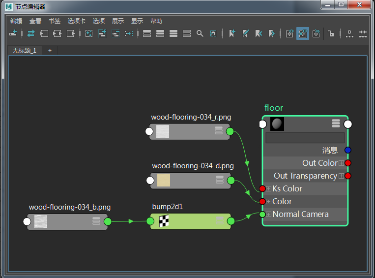
使用 standard_surface 着色器创建一个木质地板
现在，有了一个替代对象几何体的实例后，结果应该类似下图。
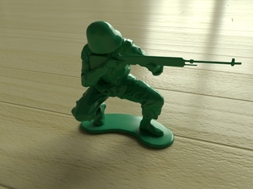
实例化替代对象
- 现在开始进行有趣的操作。我们要开始对替代对象进行实例化。我们将使用 Maya 的“特殊复制选项”(Duplicate Special Options)将替代对象复制成一个环形。首先，必须正确设置枢轴点。将替代对象从中心移开几个单位，然后将其枢轴放置在栅格的中心 0,0,0 位置。
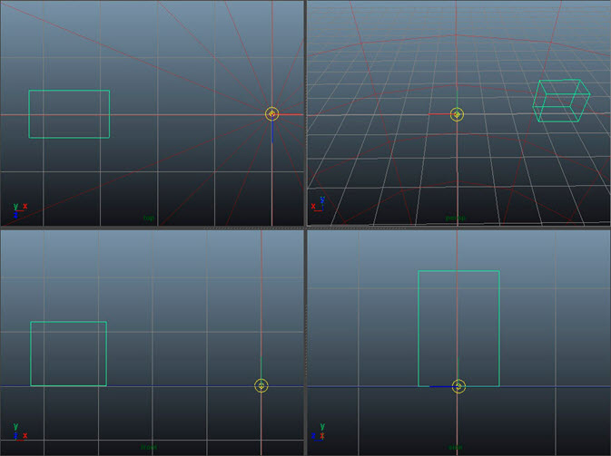
将替代对象从中心移开但将其枢轴移到 0 0 0
- 选择替代对象，然后转到“特殊复制选项”(Duplicate Special Options)。确保选中“实例”(Instance)。这一点非常重要，因为这可以节省内存，让您的场景渲染速度更快。将 Y 旋转更改为 10，并将副本数增加到 36。您可能需要根据模型的大小更改旋转值。否则，实例化的替代对象可能会彼此穿透。请确保删除原始的替代对象。否则，您得到的将是重复的几何体。
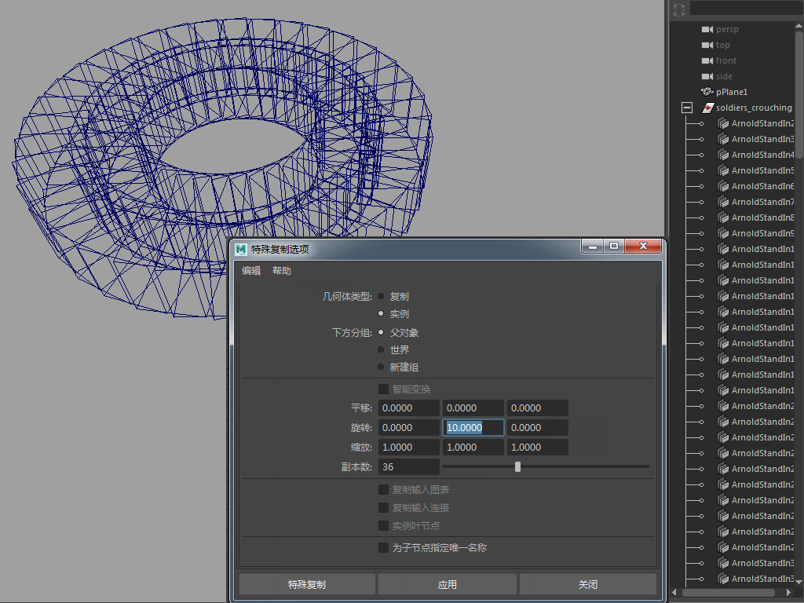
替代对象实例化为一个环形
操作的结果应该类似下图。

- 复制其中一个替代对象，将其移出到一侧，然后将其枢轴放置在栅格的中心 0,0,0 位置。
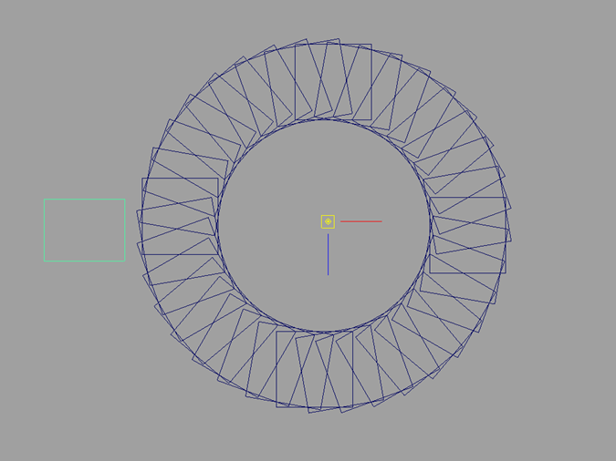
- 使用上述步骤复制各个替代对象。记得对这些对象进行实例化。
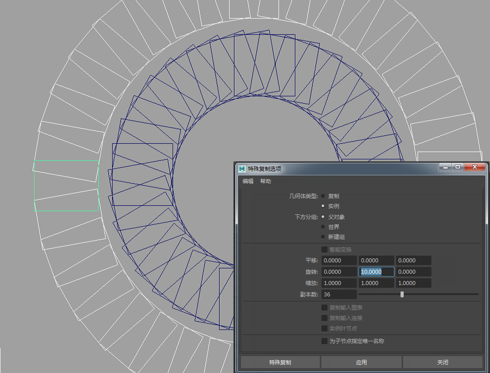
对第二排士兵重复此过程
现在，您应该有两排替代对象模型。使用相同的方法，我们为站姿士兵创建了另一个替代对象。但是，副本数量增加到了 72 个，以弥补更大周长造成的空缺。
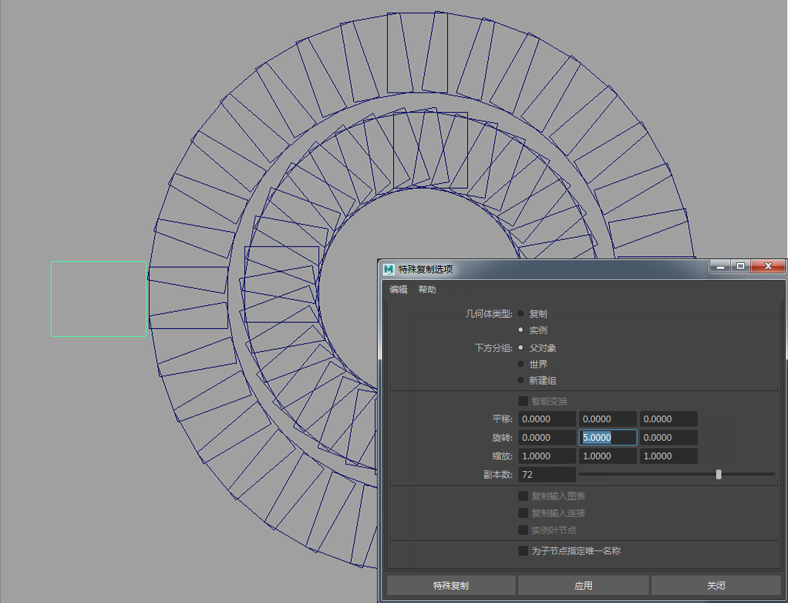
创建并复制站姿士兵替代对象
另外还要注意，站姿士兵替代对象与蹲姿士兵替代对象发生了相交。在本例中，相交也没有关系，因为只是站姿士兵的枪悬在蹲姿士兵的头顶而已。
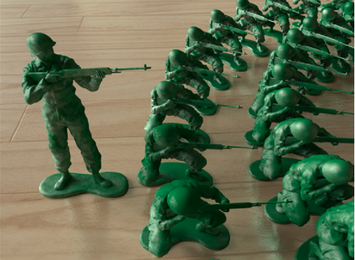
替代对象可以多次实例化，并且渲染开销很小（原始模型有大约 20,000 个多边形，如果不使用替代对象进行实例化，下面这个包含数百名士兵的场景将会非常大）。当然，Arnold 渲染该场景也没问题。
总结
这里需要指出的是，此介绍性教程仅介绍了使用替代对象的基础知识。例如，除了使用 .ass 归档文件外，替代对象还可与预编译的自定义程序式程序一起使用，您可以采取动态库的形式提供这类程序，以便使用参数化的程序几何体。替代对象也可以循环出现，您可以将程序几何体加载推迟到渲染过程中需要时再进行（即，几何体先不加载，也不占用内存，直到光线进入物体的边界框再加载）。通过这些方法，您将能够以模块化的方式组合场景。
由此可见，替代对象可以为您带来巨大的创意潜力。尽情体会替代对象的乐趣吧！
| 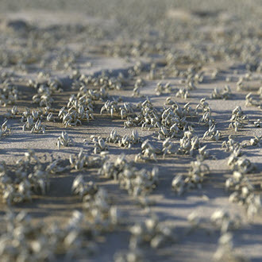 | 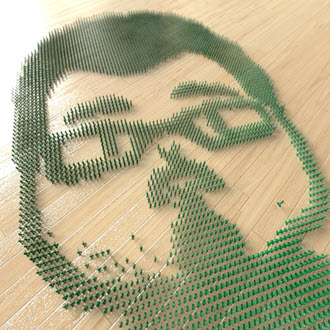 | 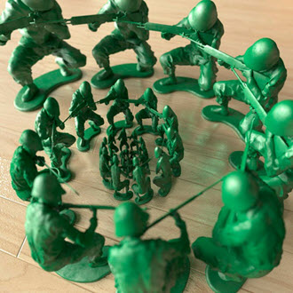 | 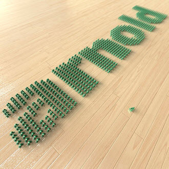 | 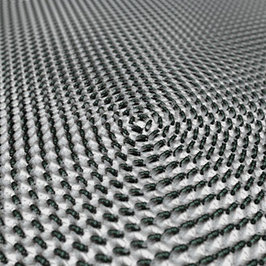 |
有关 MtoA 中的替代对象的详细信息，请参见主要的 MtoA 替代对象描述。